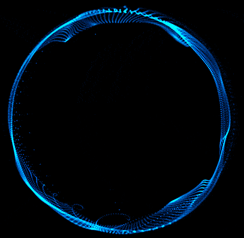

Solutions based on technological knowledge
Solving the end-to-end of every strategic business needs with the right technology-based solutions.
Drivers
Sustainability
Time to Market
Scalability
Product thinking
Knowledge cultivators
Let our experience do the talking
Let our experience
do the talking


Meet our solutions


Stay updated


Trust technology advisor